This walkthrough will show you how to implement a new SNMP Data Query. Assuming, you know the SNMP table, the next steps show how to proceed.
The starting point will be snmptable for a well know table of the HOSTS MIB:
snmptable -c <community> -v 1 <host> HOST-RESOURCES-MIB::hrStorageTable
SNMP table: HOST-RESOURCES-MIB::hrStorageTable
hrStorageIndex hrStorageType hrStorageDescr hrStorageAllocationUnits hrStorageSize hrStorageUsed hrStorageAllocationFailures
1 HOST-RESOURCES-TYPES::hrStorageOther Memory Buffers 1024 Bytes 1035356 59532 ?
2 HOST-RESOURCES-TYPES::hrStorageRam Real Memory 1024 Bytes 1035356 767448 ?
3 HOST-RESOURCES-TYPES::hrStorageVirtualMemory Swap Space 1024 Bytes 1048568 0 ?
4 HOST-RESOURCES-TYPES::hrStorageFixedDisk / 4096 Bytes 2209331 826154 ?
5 HOST-RESOURCES-TYPES::hrStorageFixedDisk /sys 4096 Bytes 0 0 ?
6 HOST-RESOURCES-TYPES::hrStorageFixedDisk /proc/bus/usb 4096 Bytes 0 0 ?
7 HOST-RESOURCES-TYPES::hrStorageFixedDisk /boot 1024 Bytes 102454 9029 ?
8 HOST-RESOURCES-TYPES::hrStorageFixedDisk /home 4096 Bytes 507988 446407 ?
9 HOST-RESOURCES-TYPES::hrStorageFixedDisk /usr/local 4096 Bytes 507988 17133 ?
10 HOST-RESOURCES-TYPES::hrStorageFixedDisk /var 4096 Bytes 507988 129429 ?
11 HOST-RESOURCES-TYPES::hrStorageFixedDisk /var/lib/nfs/rpc_pipefs 4096 Bytes 0 0 ?**
This given, the first step will be the definition of an XML file based on those OIDs. So change to your <path_cacti>/resources/snmp_queries directory and create a file named hrStorageTable.xml. You may of course choose your own name, but for me it seems appropriate to take the name of the SNMP Table itself. Before doing so, it is necessary to identify the Index of that table. Without looking at the MIB file, simply perform
snmpwalk -c <community> -v 1 -On <host> HOST-RESOURCES-MIB::hrStorageTable|more
.1.3.6.1.2.1.25.2.3.1.1.1 = INTEGER: 1
.1.3.6.1.2.1.25.2.3.1.1.2 = INTEGER: 2
.1.3.6.1.2.1.25.2.3.1.1.3 = INTEGER: 3
.1.3.6.1.2.1.25.2.3.1.1.4 = INTEGER: 4
.1.3.6.1.2.1.25.2.3.1.1.5 = INTEGER: 5
.1.3.6.1.2.1.25.2.3.1.1.6 = INTEGER: 6
.1.3.6.1.2.1.25.2.3.1.1.7 = INTEGER: 7
.1.3.6.1.2.1.25.2.3.1.1.8 = INTEGER: 8
.1.3.6.1.2.1.25.2.3.1.1.9 = INTEGER: 9
.1.3.6.1.2.1.25.2.3.1.1.10 = INTEGER: 10
.1.3.6.1.2.1.25.2.3.1.1.11 = INTEGER: 11
.1.3.6.1.2.1.25.2.3.1.2.1 = OID: .1.3.6.1.2.1.25.2.1.1
.1.3.6.1.2.1.25.2.3.1.2.2 = OID: .1.3.6.1.2.1.25.2.1.2
The first index is .1.3.6.1.2.1.25.2.3.1.1.1, but the Index Base is .1.3.6.1.2.1.25.2.3.1.1. This OID is needed for the XML file:
<interface>
<name>Get hrStoragedTable Information</name>
<description>Get SNMP based Partition Information out of hrStorageTable</description>
<index_order>hrStorageDescr:hrStorageIndex</index_order>
<index_order_type>numeric</index_order_type>
<oid_index>.1.3.6.1.2.1.25.2.3.1.1</oid_index>
<fields>
<hrStorageIndex>
<name>Index</name>
<method>walk</method>
<source>value</source>
<direction>input</direction>
<oid>.1.3.6.1.2.1.25.2.3.1.1</oid>
</hrStorageIndex>
</fields>
</interface>Lets talk about the header elements
| Field | Description |
|---|---|
| Name | Short Name; choose your own one if you want |
| Description | Long Name |
| index_order | tells us, which field shall be selected to index on; evaluated from left to right |
| index_order_type | numeric instead of alphabetic sorting |
| oid_index | the index of the table |
There are more header elements, but for sake of simplification, we'll stick to that for now.
Lets turn to the fields. They correspond to the columns of the snmptable. For debugging purpose it is recommended to start with the Index field first. This will keep the XML as tiny as possible. The <fields> section contains one or more fields, each beginning with <field_description> and ending with </field_description>. It is recommended but not necessary to take the textual representation of the OID or an abbreviation of that.
| Field | Description |
|---|---|
| Name | Short Name |
| Method | Walk or get (representing snmpwalk or snmpget to fetch the values) |
| Source | Value = take the value of that OID as the requested value. Sounds ugly, but there are more options that we won't need for the purpose of this example |
| Direction | Input (for values that may be printed as COMMENTs or the like). Output (for values that shall be graphed, e.g. COUNTERs or GAUGEs). |
| OID | the real OID as numeric representation |
Now save this file and lets turn to cacti to implement this one. First, go to Data Queries to see
and Add a new one:
Fill in Short and Long Names at your wish. Enter the file name of the XML file and don't forget to choose Get SNMP Data (indexed). Create to see
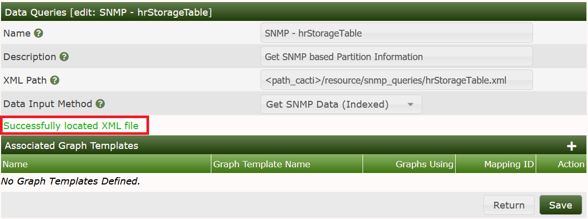
It has now Successfully located XML file. But this does not mean that there are no errors. So lets go on with that. Turn to the Device you want to query and add the new Data Query as shown:
Index Count Changed was chosen on purpose to tell cacti to re-index not only on reboot but each time the Index Count (e.g. number of partitions) changed. When done, see the results as
You'll notice, that on my laptop there are 11 indices = 11 partitions. So the XML worked up to now! To make this clear, select Verbose Query to see:
Now lets put all descriptive table columns into the SNMP Query XML file. This refers to
hrStorageType
hrStorageDescr
hrStorageAllocationUnits
I like to take the XML field names from the snmptable output, but this is not a must.
<interface>
<name>Get hrStoragedTable Information</name>
<description>Get SNMP based Partition Information out of hrStorageTable</description>
<index_order>hrStorageDescr:hrStorageIndex</index_order>
<index_order_type>numeric</index_order_type>
<oid_index>.1.3.6.1.2.1.25.2.3.1.1</oid_index>
<fields>
<hrStorageIndex>
<name>Index</name>
<method>walk</method>
<source>value</source>
<direction>input</direction>
<oid>.1.3.6.1.2.1.25.2.3.1.1</oid>
</hrStorageIndex>
<hrStorageType>
<name>Type</name>
<method>walk</method>
<source>value</source>
<direction>input</direction>
<oid>.1.3.6.1.2.1.25.2.3.1.2</oid>
</hrStorageType>
<hrStorageDescr>
<name>Description</name>
<method>walk</method>
<source>value</source>
<direction>input</direction>
<oid>.1.3.6.1.2.1.25.2.3.1.3</oid>
</hrStorageDescr>
<hrStorageAllocationUnits>
<name>Allocation Units (Bytes)</name>
<method>walk</method>
<source>value</source>
<direction>input</direction>
<oid>.1.3.6.1.2.1.25.2.3.1.4</oid>
</hrStorageAllocationUnits>
</fields>
</interface>The <name></name> information will later show up as a column heading. Don't forget to provide the correct base OIDs. Remember, that the Index will always be appended to those OIDs, e.g. the first Description will be fetched from OID = .1.3.6.1.2.1.25.2.3.1.3.1 (that is base OID = .1.3.6.1.2.1.25.2.3.1.3 together with the appended index .1 will form the complete OID .1.3.6.1.2.1.25.2.3.1.3.1.
Please notice, that all fields that will yield descriptive columns only take <direction>input</direction>
If you have completed your work, turn to the cacti web interface and select your host from the Devices list to see:
Select the little green circle next to our SNMP XML to update your last changes. Then you'll see something like:
When using Verbose Query, you'll now find
And clicking Create Graphs for this host will result in
You're not supposed to really create graphs at this moment, cause the XML is not yet complete. And you'll notice, that the second column does not present very useful information. So it may be omitted in later steps.
Now lets modify the XML again. As said earlier, the second column is not very meaningful, so lets drop it. To get the output values, I appended the last two XML field descriptions, see:
<interface>
<name>Get hrStoragedTable Information</name>
<description>Get SNMP based Partition Information out of hrStorageTable</description>
<index_order>hrStorageDescr:hrStorageIndex</index_order>
<index_order_type>numeric</index_order_type>
<oid_index>.1.3.6.1.2.1.25.2.3.1.1</oid_index>
<fields>
<hrStorageIndex>
<name>Index</name>
<method>walk</method>
<source>value</source>
<direction>input</direction>
<oid>.1.3.6.1.2.1.25.2.3.1.1</oid>
</hrStorageIndex>
<hrStorageDescr>
<name>Description</name>
<method>walk</method>
<source>value</source>
<direction>input</direction>
<oid>.1.3.6.1.2.1.25.2.3.1.3</oid>
</hrStorageDescr>
<hrStorageAllocationUnits>
<name>Allocation Units (Bytes)</name>
<method>walk</method>
<source>value</source>
<direction>input</direction>
<oid>.1.3.6.1.2.1.25.2.3.1.4</oid>
</hrStorageAllocationUnits>
<hrStorageSize>
<name>Total Size (Units)</name>
<method>walk</method>
<source>value</source>
<direction>output</direction>
<oid>.1.3.6.1.2.1.25.2.3.1.5</oid>
</hrStorageSize>
<hrStorageUsed>
<name>Used Space (Units)</name>
<method>walk</method>
<source>value</source>
<direction>output</direction>
<oid>.1.3.6.1.2.1.25.2.3.1.6</oid>
</hrStorageUsed>
</fields>
</interface>This works very much the same way as above.
Provide the fields hrStorageSize and hrStorageUsed
Provide a useful name
Don't forget to specify <direction>output</direction>
Give the corresponding base OIDs
Now we may proceed as said above: Pressing the green circle runs that XML definitions against the host and updates the rows/columns. You will notice the “missing” second column only when Create Graphs for this Host is selected.
Note: Don't forget to set <direction>output</direction> for all variables/fields, that should be stored in RRDfiles and be graphed!. This is the mistake that occurs most often.
The Data Template will define, how the data is retrieved by the XML Query is saved. For more information about the principles of operation, please see Common Tasks. Please go to Data Templates and Add:

Define the Name of the Data Template. When defining the Name of the Data Source, do not forget to check the Use Per-Data Source Value (Ignore this Value) checkbox. This will come in useful later. Data Input Method will read Get SNMP Data (Indexed). Select the Data Source Profile as usual:
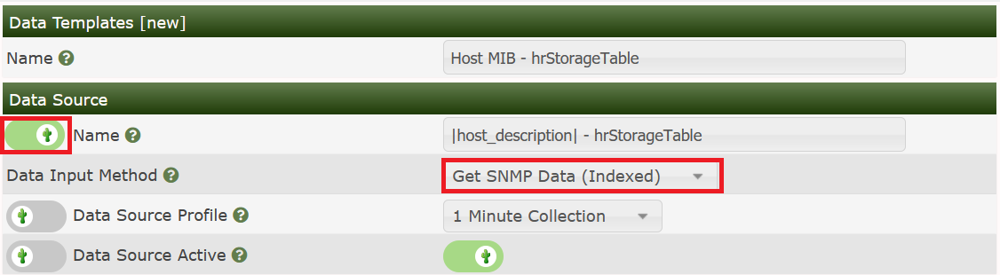
Now to the Data Source Items. I like giving them the names of the MIB OIDs, see:

and New or the plus sign on the Data Source Item panel. Now enter the second Data Source Item:

Please pay attention to setting the Maximum Value to 'U' (no limit). Else, all values exceeding the pre-defined as NaN. Now scroll down to the bottom of the page and check Index Type, Index Value and Output Type Id

Save and the Data Template is finished.
The Graph Template will define, how the data is presented. For more information about the principles of operation, please see Common Tasks. Please go to Graph Templates and Add:

Fill in the header names and don't forget to check the Use Per-Graph Value (Ignore this Value) for the Graph Template Title:

and Create.
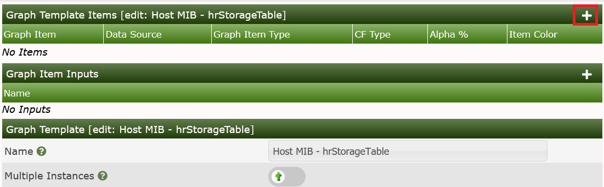
Now Add the first Graph Item as usual:
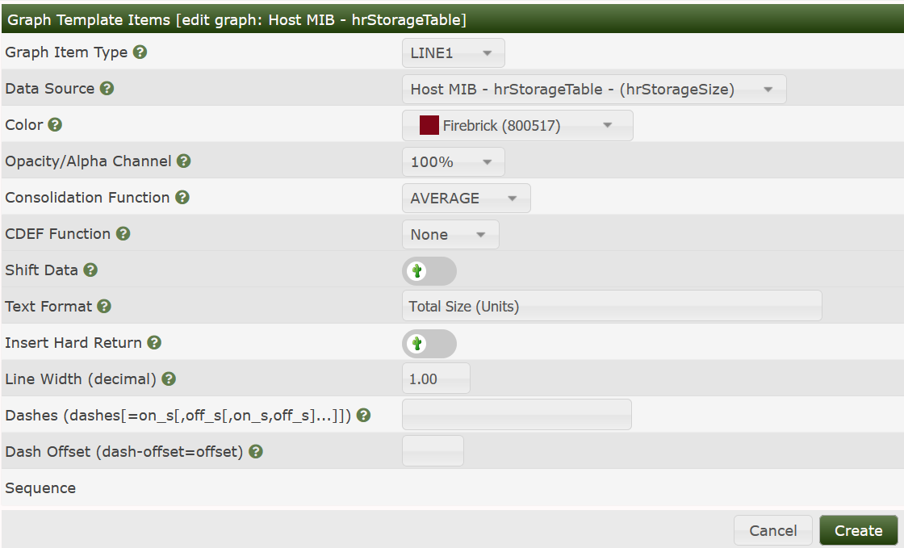
Add the Legend and the second Graph Item:

Again, add the Legend to end up with
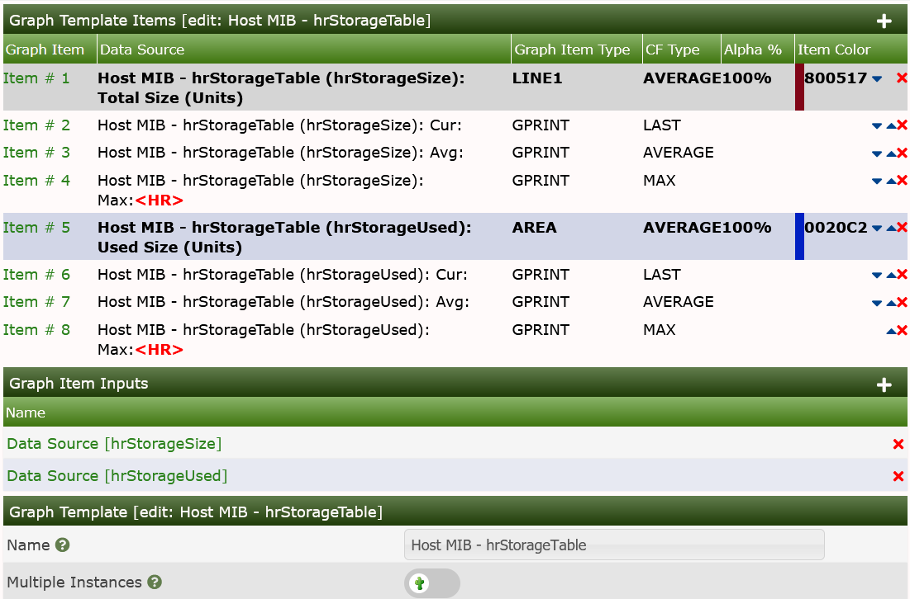
We'll now have to revisit the Data Query
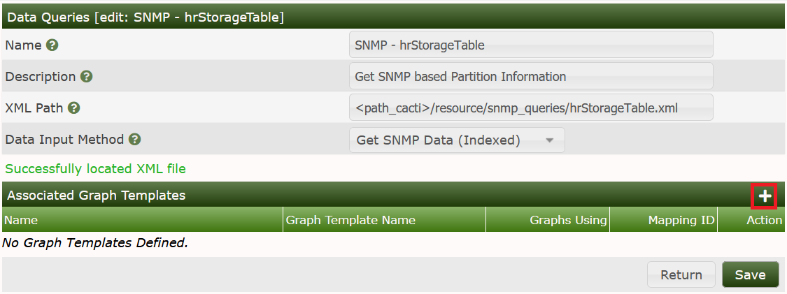
Create:

Select the correct Data Sources and check the boxes on the right. Save. Now fill in some useful Suggested Values, at first for the Data Template:
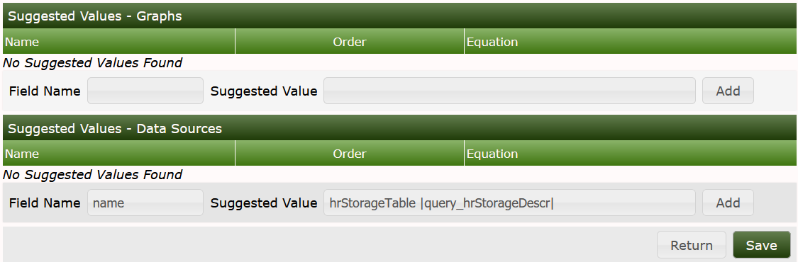
Now apply suggested values for the Graph Template:
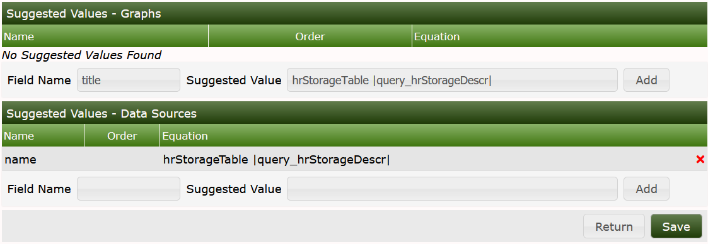
Now the Data Query is complete:

Now we're almost done. Everything's ready for use now. So go to your device and select Create Graphs for this Host. Select some of the partitions you're interested in:
and Create to see:
Lets visit the Data Sources:
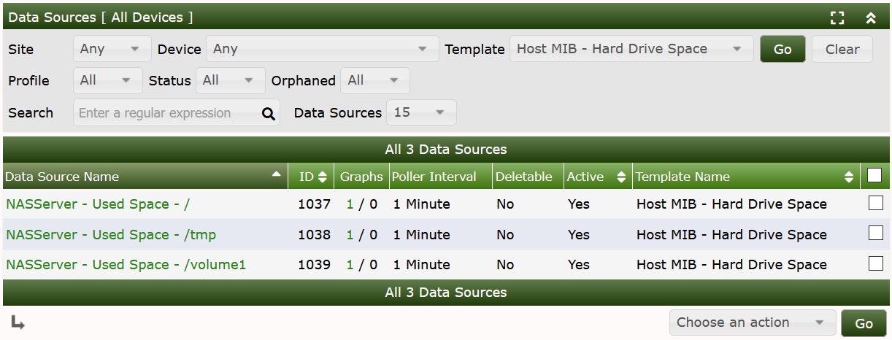
As you can see, the Suggested Values of the Data Query defined the Name of the Data Template. So lets go to Graph Management:
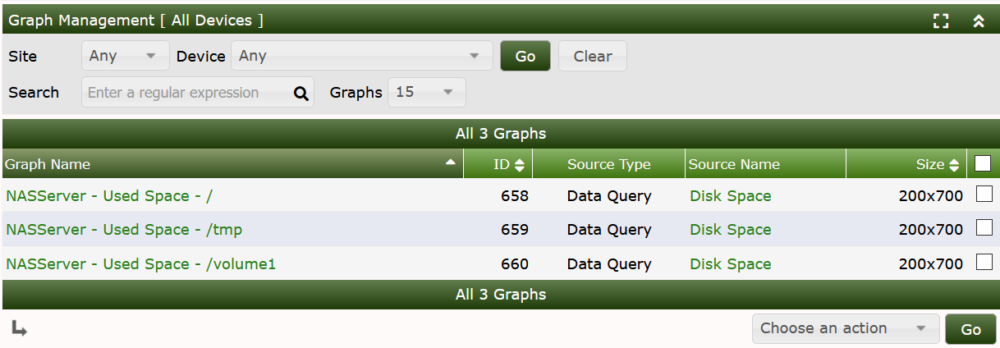
to see the title defined by the Suggested Values. When turning to the Graphs, you may see something like
This might be the end of the show. While it should be enough to define some “easy” SNMP XML based Data Queries, there are some tricks and hints left to explain.
As you may have noticed, the quantities defined by this example are counted in Units, not Bytes. This is somewhat inconvenient but may be changed. Lets wait for the next Section...
As said above, with the current XML size values are measured in Units. The current Unit Size is given by hrStorageAllocationUnits, but the reading of it is like 4096 Bytes. To use this in any calculations, we must get rid of the string Bytes. This can be done by the VALUE/REGEXP Feature of Cacti's XML definitions. So please change
<hrStorageAllocationUnits>
<name>Allocation Units (Bytes)</name>
<method>walk</method>
<source>value</source>
<direction>input</direction>
<oid>.1.3.6.1.2.1.25.2.3.1.4</oid>
</hrStorageAllocationUnits>By
<hrStorageAllocationUnits>
<name>Allocation Units (Bytes)</name>
<method>walk</method>
<source>VALUE/REGEXP:([0-9]*) Bytes</source>
<direction>input</direction>
<oid>.1.3.6.1.2.1.25.2.3.1.4</oid>
</hrStorageAllocationUnits>To prove this, go to your device and again Verbose Query our Data Query to see:
Now select Create Graphs for this Host and notice the change of the column Allocation Units (Bytes). The string “Bytes” has gone:
To use these values, we define a CDEF:
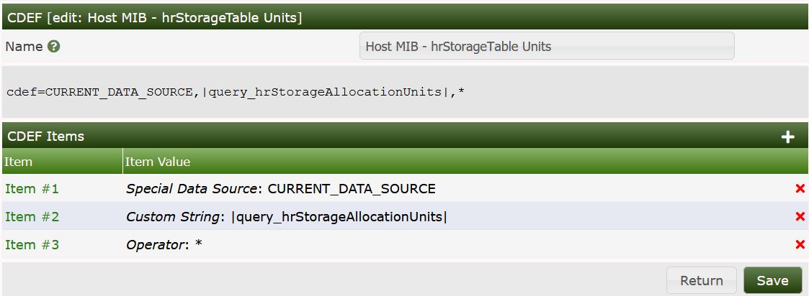
Notice, that with recent releases of cacti, it is possible to use |query_*| values within CDEFs. Finally, go to Graph Templates and use this CDEF with all Graph Items:

Change the Base Value to 1024 for Bytes → kBytes and the y-axis description to Bytes:

Now the Graph looks like

Please find the example resources below. Save hrStorageTable.xml into ./resource/snmp_queries and import the Graph Template from cacti_graph_template_host_mib_hrstoragetable.xml.
Cacti Graph Template Host MIB hrStorageTable
hrStorageTable download and store into resource/snmp_queries.
Copyright (c) 2004-2024 The Cacti Group